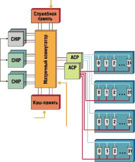
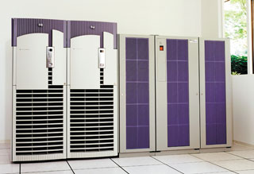

Анатолий Журкин
Неотъемлемая часть любого центра обработки данных - системы хранения информации. Как правило, они организуются в виде дисковых массивов, обладающих высокой производительностью и гарантированной надежностью хранения. Корпорация Hewlett-Packard (http://www.hp.com), считая задачу хранения данных стратегически важной, постоянно совершенствует свой модельный ряд устройств хранения информации. В частности, HP выпускает широкий набор дисковых систем и массивов, позволяющих организовать централизованное управление корпоративными данными, получить возможность наращивания объемов хранимых данных и производительности устройств. Под масштабируемостью подразумевается возможность не только наращивать емкость устройств хранения, но и использовать при этом единый механизм управления хранилищем, резервным копированием и восстановлением данных без перенастройки.
Выпускаемые HP системы могут размещаться в стойках вместе с серверами или отдельно. Модели дисковых массивов могут работать как с Unix-, так и с NT-серверами, а некоторые из них обеспечивают одновременный доступ к данным для серверов, работающих под управлением различных ОС - HP-UX, Solaris, Windows NT, AIX и т. д. Немаловажно, что HP использует в своих массивах инновационные разработки, в частности, сочетание дисков разных емкостей и разной скорости вращения.
Наиболее совершенными в линейке дисковых устройств хранения считаются полностью отказоустойчивые дисковые массивы HP StorageWorks ХР (ранее известные как HP SureStore E Disk Array XP), одни из лучших в отрасли по производительности и функциональному оснащению. Устройства хранения данных высшего класса Hewlett-Packard сконструированы таким образом, чтобы время незапланированного простоя не превышало 5 мин в год. Так, все дисковые массивы Hewlett-Packard обеспечивают уровень доступности 99,95%, а модели класса hi-end поддерживают стандарт доступности "пять девяток" - 99,999%. Дисковые массивы HP StorageWorks ХР, предназначенные для оперативного доступа к данным в масштабах корпорации, могут служить ключевым компонентом для построения отказоустойчивых решений в масштабах города, страны или даже мира.
Высокая доступность данных в StorageWorks ХР достигается благодаря ряду передовых технологий. В частности, имеются возможности горячей замены дисков, плат, контроллеров, источников питания, вентиляторов, а также возможность обновления внутреннего ПО (firmware) без остановки системы. Комплекс не имеет "критической точки отказа", активные интерфейсные процессоры CHIP (Client/Host Interface Processor) и процессоры управления дисками ACP (Array Control Processor) продублированы, а для кэш-памяти применяется зеркалирование. Дублируются также пути доступа к каждому диску и ко всем активным компонентам.
Еще одно достоинство массивов XP - управляемость. Система имеет широкий набор средств управления массивом и логическими томами LUN (Logical Units), а также доступом, ресурсами, локальными и удаленными копиями, совместным использованием данных, производительностью, кэш-памятью и т. п. Следует отметить также универсальность и масштабируемость этих систем. Разработчики StorageWorks XP обеспечили поддержку множества интерфейсов и серверных платформ - как для работы в рамках выделенной сети устройств хранения (Storage Area Network, SAN), так и для прямого соединения. Предусмотрена возможность использования высоконадежных дисковых механизмов различной емкости с различным временем доступа, имеется аппаратная поддержка RAID 0/1 и RAID 5. Емкость одиночного устройства можно наращивать до 9,3 Тбайт, а объем зеркалированной кэш-памяти - до 32 Гбайт.
Стратегия Hewlett-Packard включает предоставление широкого комплекса услуг по внедрению системы, обучению, технической поддержке как собственно дискового массива, так и всего комплексного решения из единого центра этой корпорации.
Особенности архитектуры
Традиционная архитектура корпоративных систем хранения данных высшего класса предусматривает обмен данными с серверами через подсистему ввода-вывода. Для обмена данными с мэйнфреймами используются интерфейсы ESCON и FICON, для подключения открытых систем - Fibre Channel (1 Гбит/с и 2 Гбит/с), кроме того, возможна поддержка SCSI. Запросы от серверов поступают на интерфейсные процессоры системы хранения, которые при чтении определяют наличие (cache hit) или отсутствие (cache miss) запрашиваемых данных в кэш-памяти, а при записи просто помещают данные в кэш-память.
После этого происходит подкачка данных с дисков в кэш-память или, наоборот, сброс данных на диск. Обмен данными между дисками и кэш-памятью контролируется соответствующими процессорами, совместно с дисками образующими дисковую подсистему (рис. 2). Важно отметить, что для оптимизации операций чтения и записи все пользовательские данные проходят через кэш-память.
В традиционных системах хранения информация передается по шине. Как правило, шин в системе несколько (от двух до четырех), однако даже их суммарная пропускная способность не превышает 1,5 Гбайт/с. Полезная пропускная способность значительно ниже, так как по шинам передаются не только пользовательские, но и управляющие данные.
Дисковые массивы HP StorageWorks ХР, построенные на основе коммутируемой архитектуры, ориентированы на поддержку "тяжелых" приложений с интенсивным вводом-выводом, выполняющихся как на открытых системах, так и на мэйнфреймах. Эта технология использует коммутируемую сеть, обеспечивающую множественные избыточные неблокируемые каналы передачи данных между подсистемой ввода-вывода, кэш-памятью и дисковой подсистемой. Внутренняя пропускная способность подобных систем может достигать 3,2-6,4 Гбайт/с для передачи данных и 3,2 Гбайт/с для передачи управляющей информации.
|  | Рис. 1. Блок-схема базовой архитектуры HP StorageWorks ХР128.
|
HP StorageWorks ХР48 и ХР512
Как известно, в серверах класса Superdome предусмотрены исключительно внешние, а не внутренние жесткие диски. Общая емкость дискового пространства в Superdome может составлять десятки терабайт, а в качестве внешних подсистем обычно используются дисковые массивы HP StorageWorks XP512 (рис. 2). Основные характеристики этих систем приведены в табл. 1. Массивы XP512 могут быть предварительно интегрированы с Superdome, что позволяет избежать запланированных остановок систем для резервного копирования или модернизации.
|  | Рис. 2. Система HP StorageWorks ХР512 с сервером Superdome.
|
Таблица 1. Характеристики моделей StorageWorks xp48 и xp512
| Модель | XP48 | XP512 |
| Емкость массива | От 72 Гбайт до 3,5 Тбайт | От 72 Гбайт до 37,3 Тбайт |
| Емкость жестких дисков, Гбайт | 18, 73 | 18, 73 |
| Уровни RAID | 0/1 или 5 | 0/1 или 5 |
| Количество групп | 11 | 126 |
| Дисков в динамическом резерве | 4 | 16 |
| Объем кэш-памяти, Гбайт | 2-16 | 2-16 |
| Объем служебной памяти, Гбайт | 1 | 1,25 |
| Портов (FC-AL или ESCON) | 24 | 32 |
| Пар процессоров CHIP | 1-3 | 1-4 |
| Пар процессоров ACP | 1 | 1-4 |
| Поддерживаемых приводов | 4-48 | 4-512 |
По мнению многих аналитиков ИТ-рынка, концепция выделенной сети устройств хранения SAN - это в настоящее время наиболее перспективный способ реализации корпоративных центров данных. Дисковый массив высшего уровня HP StorageWorks XP512 можно эффективно использовать в открытых архитектурах SAN, и, в отличие от массивов ряда других фирм-производителей, он не накладывает ограничений на использование других устройств в SAN.
Системы HP StorageWorks XP512 хорошо приспособлены для работы в рамках SAN: они дают возможность использовать до 32 интерфейсов Fibre Channel (это основной интерфейс к SAN), устанавливать соединения через SAN с серверами, работающими под управлением HP UX, MPE/iX, Microsoft Windows NT/2000, Sun Solaris, IBM AIX, Linus, Novell Netware, S390-совместимых ОС и т. д.
Для повышения уровня доступности в XP512 применены резервные батареи и зеркальная кэш-память, имеется возможность обновлять микрокод без нарушения работоспособности массива. Реализована возможность добавления и замены дисковых устройств и кэш-памяти в горячем режиме, обеспечивается автоматическое восстановление данных и автоматическое отключение вышедших из строя компонентов. Предусмотрены также функции очистки кэш-памяти и корректировки ошибок, в системе ведется журнал событий и осуществляется само-мониторинг.
Устойчивость к сбоям определяется особенностями архитектуры HP StorageWorks XP512, прежде всего механизмами дублирования компонентов - активных и избыточных интерфейсных процессоров CHIP, а также процессоров управления дисками ACP, активных шин для данных, команд и интерфейсов. Кэш-память зеркалируется, а для доступа к каждому диску предусмотрены два различных пути. Сами дисковые механизмы обладают высокой надежностью.
Другая модель из семейства XP, дисковый массив HP StorageWorks XP48 (см. табл. 1), обладает высокой производительностью при малой площади основания. Здесь используются архитектурные и программные решения, характерные для системы HP StorageWorks XP512, но в более компактном варианте, что позволяет значительно сэкономить пространство в информационных центрах. HP StorageWorks ХР48 обеспечивает емкость до 3,5 Тбайт и поддержку гетерогенных сред, включая HP-UX, Windows NT, Solaris и AIX. Средство оптимизации позволяет перемещать часто используемые данные с недорогих накопителей большой емкости на диски, меньшие по объему, но обладающие более высокой производительностью. К тому же допускается автоматическая разгрузка наиболее часто используемого накопителя в массиве и, самое главное, может выполняться преобразование данных между RAID 5 (оптимизация по емкости) и RAID 1 (оптимизация по производительности).
HP StorageWorks ХР128 и ХР1024
В прошлом году Hewlett-Packard представила два новых дисковых массива высшего класса StorageWorks XP128 и ХР1024 (табл. 2), а также новое ПО управления данными. Эти средства заметно повышают эффективность использования устройств хранения данных в инфраструктурах хранилищ данных, оптимизируя их производительность, доступность и масштабируемость.
Системы StorageWorks XP128 и ХР1024 стали наиболее современным решением для использования в составе серверов HP Superdome. Эти массивы комплектуются ПО HP Command View, которое отвечает за централизованное дистанционное управление системами хранения данных, их диагностику и поддержание безостановочной работы. Дисковые массивы могут объединяться в кластер, что позволяет не только повысить отказоустойчивость за счет устранения единой точки отказа, но и обеспечить резервное копирование без простоя или снижения быстродействия системы.
Таблица 2. Характеристики моделей StorageWorks ХР128 и ХР1024
| Модель | XP128 | XP1024 |
| Максимальная емкость, Тбайт | 9,3 | 74 |
| Максимальная пропускная способность матричного коммутатора, Гбайт/с | 7,5 | 15 |
| Максимальная скорость передачи данных, Гбайт/с | 2,4 | 3,2 |
| Максимальное количество IOPS, тыс. | 375 | 500 |
| Объем кэш-памяти, Гбайт | 32-64 | 64-128 |
| Объем служебной памяти, Гбайт | 3-6 | 3-6 |
| Количество портов | 24-48 | 32-64 |
По сравнению с предыдущими моделями новые системы хранения данных обладают вдвое большей емкостью. Система HP StorageWorks XP128 выполнена в одной стойке и при использовании жестких дисков по 73 Гбайт может иметь суммарную емкость до 9,3 Тбайт. Благодаря 48 портам Fibre Channel и 32-Гбайт кэш-памяти XP128 при последовательном чтении обеспечивает поток данных 2,4 Гбайт/с и 375 тыс. ежесекундных операций ввода-вывода.
Дисковый массив ХР1024, выполненный уже в двух стойках, - система более высокого класса. При использовании таких же жестких дисков его емкость достигает 74 Тбайт. А число, следующее за буквами ХР в названии систем, соответствует максимально возможному для каждого из них числу дисков. Увеличенный до 128 Гбайт объем кэш-памяти в сочетании с 64 портами Fibre Channel позволяет поднять планку производительности до 3,2 Гбайт/с при 500 тыс. операций ввода-вывода в секунду (IOPS). Емкость систем можно наращивать без остановки их работы.
К StorageWorks XP1024 прилагается ПО HP Performance Advisor XP и AutoPath для управления устройствами хранения данных, а также система HP Cluster Extention XP для организации удаленного восстановления данных в случае масштабных сбоев. XP1024 может обслуживать среды с разными ОС, включая HP-UX, Windows, Solaris, AIX и Linux.
Дисковый массив StorageWorks XP128 имеет одинаковую с XP1024 архитектуру, то же программное обеспечение и т. п., но при этом требует меньшей площади в помещении. Скорость последовательной передачи данных у этой модели составляет 2,4 Гбайт/сек (375 тысяч IOPS при выполнении задач из кэш-памяти).
Данные в массивах защищаются с помощью схем RAID различных уровней. На момент выпуска были доступны уровни RAID 1 (2+2 или 4+4 диска) и RAID 5 (3+1 диск). Довольно перспективной считается поддержка RAID 5 со схемой "7+1" (1 диск контроля четности на 7 дисков с данными) - это увеличивает эффективность использования дискового пространства до 87,5%. Для сравнения: у RAID 1 она равна 50%, а у RAID 5 (3+1 диск) - 75%.
В HP StorageWorks XP128 емкость единичного устройства составляет до 9,3 Тбайт (128 дисковых механизмов) при скорости вращения дисков 10 000 или 15 000 об./мин. Высокоскоростные соединения точка-точка между внутренними компонентами осуществляются с помощью матричного коммутатора (crossbar switch) с пропускной способностью 7,5 Гбайт/с.
StorageWorks ХР128 допускает наращивание ресурсов путем добавления или замены дисков, интерфейсных плат, банков памяти, источников питания и вентиляторов в оперативном режиме без остановки системы. Предусмотрено одновременное подключение к различным серверным платформам (как прямое, так и через SAN), включая мэйнфреймы IBM, Hitachi и Amdahl, а также ОС HP-UX, HP Tru64 Unix, HP OpenVMS, Sun Solaris, Microsoft Windows NT/2000, IBM AIX, Novell Netware, Linux, SGI Irix. В дальнейшем список поддерживаемых платформ планируется расширить. Кроме того, данная модель дискового массива поддерживает интерфейсы Fibre Channel, ESCON и FICON, причем число портов каждого вида можно наращивать до 24.
В HP StorageWorks XP128 могут использоваться одновременно различные виды дисков - в настоящее время это диски емкостью 36 или 73 Гбайт. Дисковый массив также рассчитан на использование последующих поколений более емких и быстрых дисков, что обеспечивает защиту инвестиций заказчика и простую масштабируемость сверх 9,3 Тбайт. Доступ к каждому диску продублирован для обеспечения надежности. Диски подключаются по интерфейсу Fibre Channel.
Конструктивно дисковый массив состоит из одной стойки, в которой находятся кэш-память, память для служебной информации, пары CHIP, пары ACP, матричный коммутатор, резервированные источники питания и диски.
Программное обеспечение
Программное средство HP Command View для XP обеспечивает централизованное управление данными через сеть и диагностику соединений, что увеличивает эффективность администрирования ИТ-ресурсов. Кроме того, можно оптимизировать принятие решений администратором путем интеграции этого ПО с модулем OpenView Operations. Соглашения о гарантированном уровне услуг (SLA, Service Level Agreement) охватывают теперь не только серверы и приложения, но и дисковые массивы. Для массивов StorageWorks XP также существуют решения в области консолидации систем и обеспечения непрерывности бизнеса.
Кроме программного обеспечения, представленного выше, в число ПО для управления данными входят HP Application Policy Manager для XP и HP StorageWorks Instant Recovery. Application Policy Manager - инструмент, устанавливающий соответствие между приоритетными задачами бизнеса и ресурсами дискового массива, Instant Recovery - часть решения HP Zero Downtime Backup для XP, которое позволяет восстанавливать данные за считанные минуты.
Обеспечение непрерывности бизнеса
Использование нескольких локальных копий данных, размещенных в одном дисковом массиве, позволяет осуществлять резервное копирование в оперативном режиме, безопасно тестировать новые версии приложений на реальных данных и поддерживать различные технологии формирования хранилищ данных.
Управление созданием локальных копий данных в дисковых массивах XP осуществляется с помощью ПО Business Copy ХР. Этот пакет позволяет создавать копии любого активного приложения или набора данных и управлять использованием новой копии в других приложениях или системах.
Business Copy ХР может работать с несколькими копиями данных (до девяти плюс оригинал), причем предусмотрена синхронизация данных между оригиналом и копией. Чтобы минимизировать время, необходимое для поддержания согласованности копий, можно копировать только модифицированные данные.
Использование удаленных копий данных, размещенных в различных дисковых массивах, упрощает управление нагрузкой и обеспечивает поддержку различных технологий построения распределенных систем.
Управление созданием удаленных копий в дисковых массивах XP осуществляется с помощью программного пакета Continuous Access ХР, основная функция которого - создание зеркальной копии для всех логических единиц дисковых массивов, удаленных друг от друга на расстояние до 100 км с использованием интерфейсов Fibre Channel. Continuous Access XP Extension реализует асинхронное взаимодействие между массивами, удаленными на более значительные расстояния с использованием дополнительных промежуточных устройств.
В случае выхода из строя основной площадки происходит автоматическое переключение на удаленную. Обратное переключение и синхронизация данных после восстановления основной площадки происходит в онлайновом режиме без остановки системы. Канал ввода-вывода, по которому дисковый массив подключается к серверу, состоит из серверного FC-адаптера, среды подключения (кабель или SAN-инфраструктура) и порта ХР.
Программное обеспечение Auto Path XP исключает риск простоя системы в результате выхода из строя какого-либо из вышеперечисленных компонентов канала - для этого назначаются множественные каналы от одного сервера к одному логическому диску. При подключении к серверу по нескольким каналам Auto Path XP поддерживает распределение нагрузки и автоматическое переключение между ними в случае сбоев. Auto Path XP поддерживает ОС HP-UX, Windows, AIX и Linux.
Оперативное резервное копирование в онлайновом режиме, позволяющее избежать запланированного простоя критически важных бизнес-приложений, осуществляется с помощью решения, в которое входит специальный сервер (его основная функция - как раз осуществление резервного копирования), ПО HP OpenView OmniBack II, а также рассмотренные выше программы Business Copy ХР и Continuous Access ХР. Сервер резервирования непосредственно подключен к дисковому массиву и имеет доступ к копиям томов, которые создаются при помощи Business Copy ХР и могут реплицироваться на удаленные площадки с использованием Continuous Access ХР. Таким образом, резервное копирование осуществляется через выделенный сервер, а не по локальной или глобальной сети. Серверы приложений при этом продолжают работу, имея доступ к оригиналам рабочих данных.
Средства конфигурирования, мониторинга и управления
Гибкое управление конфигурацией дисковых массивов XP и доступом к данным базируется на концепции логического тома LUN (Logical Unit). Полный контроль за отображением LUN, включая создание томов и назначение путей к ним, осуществляется с помощью ПО LUN Configuration Manager/Secure Manager ХР, которое позволяет, в частности, скрыть от одного сервера логические тома, предназначенные для использования другим сервером.
Для мониторинга производительности дисковых массивов XP используется ПО Performance Advisor ХР, которое отслеживает скорость работы и загрузки всех компонентов ХP, а также собирает статистические данные об использовании кэш-памяти и каналов ввода-вывода. Performance Advisor графически отображает оперативную информацию и данные, накопленные за определенный период работы системы, а при достижении предельных уровней производительности выдает оповещение. Программа интегрируется с Command View XP и OpenView.
Другой пакет, Cache LUN ХР, служит для резервирования определенной области кэш-памяти за определенным логическим томом, позволяя таким способом регулировать скорость доступа к данным. В свою очередь ПО Auto LUN ХР позволяет оптимизировать использование дискового пространства как по производительности, так и с точки зрения стоимости. Auto LUN ХР отслеживает и анализирует загрузку дискового массива, выявляет тома с интенсивным обменом данными, поддерживает ручную и автоматическую миграцию томов. Удаленное Web-управление дисковыми массивами XP осуществляется с помощью Command View ХР. Это ПО предоставляет интерфейс для удаленного доступа к внутренней конфигурации массива и для удаленного доступа к массиву программных продуктов LUN Configuration Manager/Secure Manager ХР, Cache LUN ХР и т. д. Command View обеспечивает удаленный контроль за работой программ Continuous Access ХР и Business Copy ХР, а также интерфейс между выделенной сетью с одним или несколькими массивами XP, с одной стороны, и локальной вычислительной сетью предприятия - с другой. Предусмотрено одновременное управление несколькими дисковыми массивами.
Command View ХР графически отображает логическую и физическую конфигурацию массива и состояние компонентов ХР, позволяет загружать через Интернет последние версии микрокода. При помощи программного продукта HP Smart Plug-in XP этот инструмент интегрируется с системой HP OpenView Operations.
Для покупателей дисковых систем StorageWorks предусмотрены услуги и техническая поддержка Hewlett-Packard. Можно воспользоваться уровнем поддержки HP Premier Critical Support Service, предоставляющим 100%-ную гарантию доступности данных, и услугами консультационной инфраструктуры Hewlett-Packard для управления бизнес-данными.